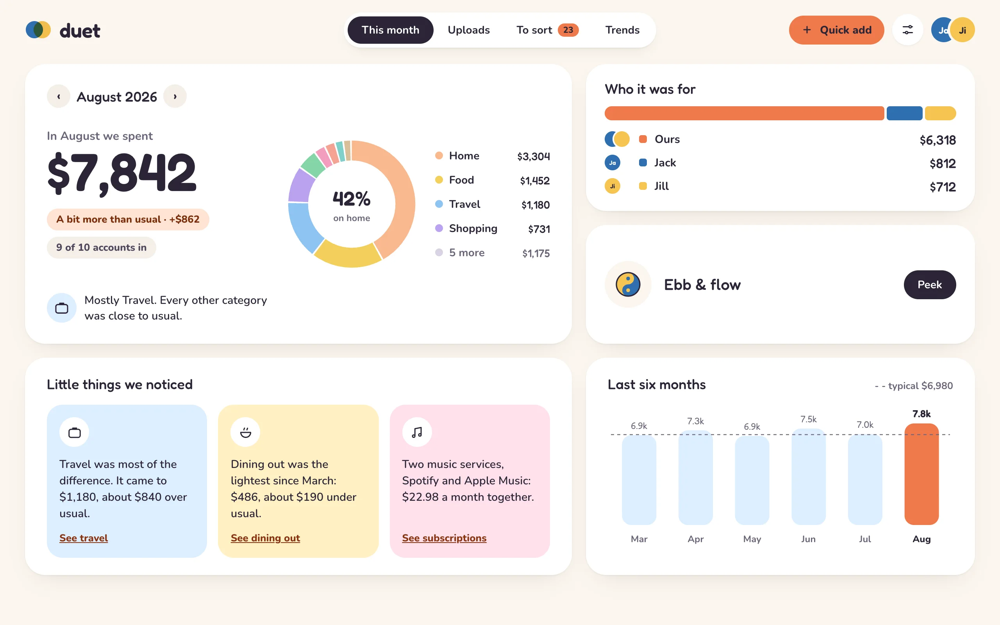
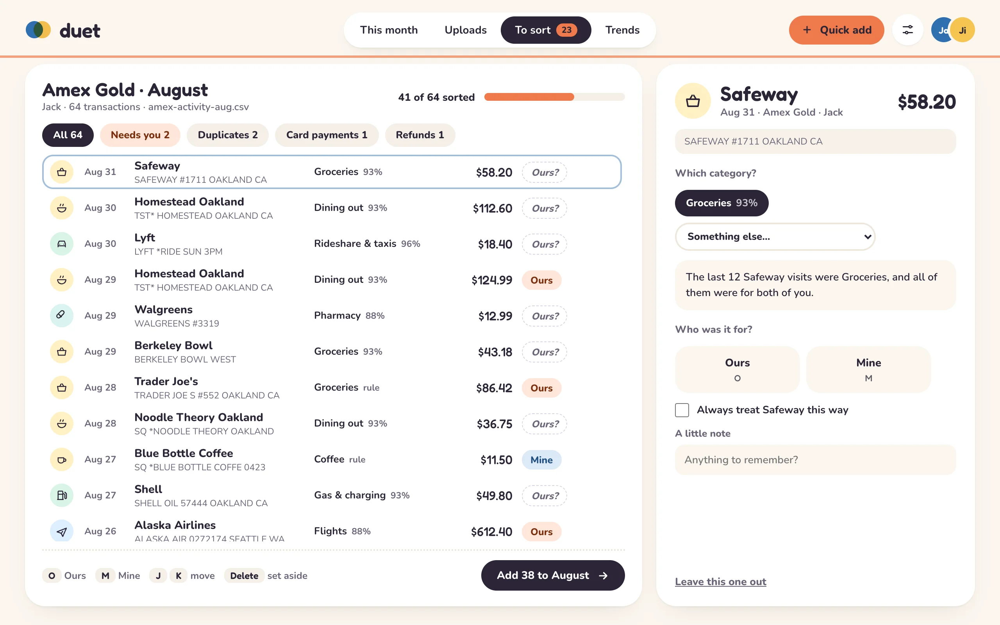
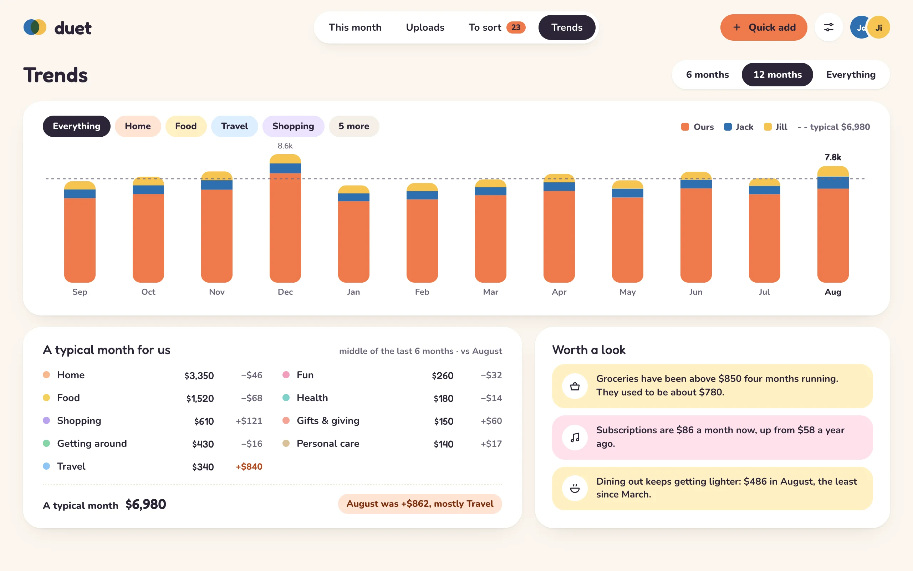
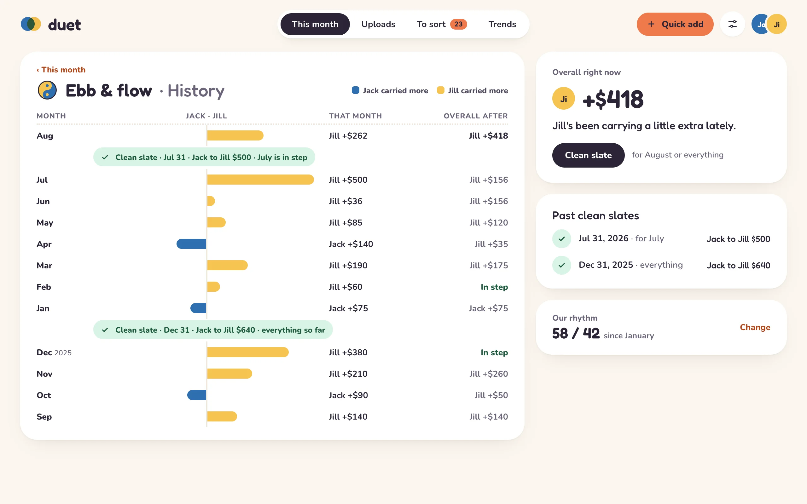

Ours and Mine
Every purchase is Ours or Mine. Mine stays personal: your partner sees only its totals, never the shops.
Duet is a private money app for two. Bring in your bank statements, sort each purchase into Ours or Mine, and see where your money goes each month. It lives on your own Macs: no bank logins, no ads, no one else's cloud.

Each of you brings in your own statements. Duet puts together the month you share, and keeps what's yours, yours.
Every purchase is Ours or Mine. Mine stays personal: your partner sees only its totals, never the shops.
See who has carried a little more toward Ours, against Our rhythm, the split you set from your incomes. No debts, no due dates: a Clean slate whenever you like.
CSV, Excel and OFX files from ten US banks and cards, read on your Mac. Duet never signs in to your bank.
Your rules, your own history and a starter pack sort most rows. Local models on your Mac mini help with the rest, and nothing is sent anywhere else.
A Mac mini at home passes changes between your two Macs without being able to read them. Each of you keeps a 24-word recovery phrase.
Every line is on GitHub under the AGPL, and the bank readers under MIT. Built with Claude Code.
Sort with the keyboard, see what a typical month looks like for you, and watch Ebb & flow over time.



Duet works on one Mac straight away. Add a Mac mini when you want the two of you in step.
One line in Terminal, or the download below. Updates arrive in the app.
An always-on Mac on your Tailscale network relays changes and runs the sorting models. The setup guide takes you through it.
Your partner opens it, installs Duet and joins your household with its own recovery phrase.
Duet has no servers of its own and no accounts. Your data lives on your Macs, and the only other copy is on your own Mac mini, encrypted with keys it doesn't have.
duet export turns everything into JSON, CSV and SQLite with a recovery phrase.Free, for macOS 13 or later on Apple silicon and Intel.
One line downloads the latest release from GitHub and puts Duet in Applications, with nothing extra to allow.
$ curl -fsSL https://firstprateek.github.io/duet/install.sh | sh
Open Terminal from Applications → Utilities, paste, and press Return.
Duet isn't notarized by Apple (that needs a paid developer account), so macOS asks once before opening it:
Updates arrive in the app, and each one is checked against Duet's own signature before it installs.